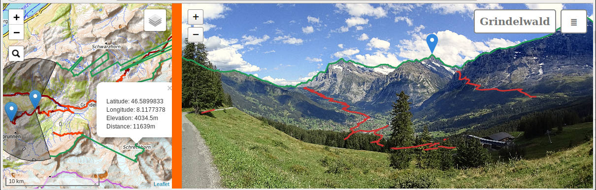
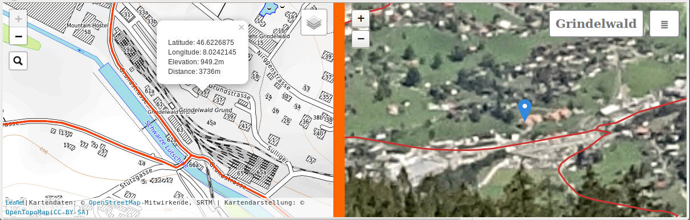
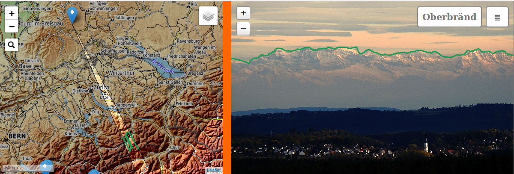
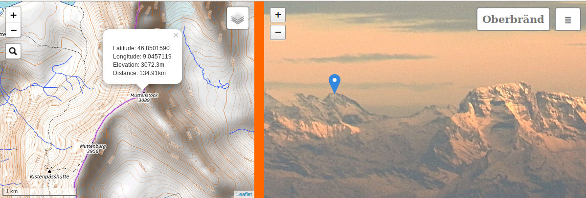
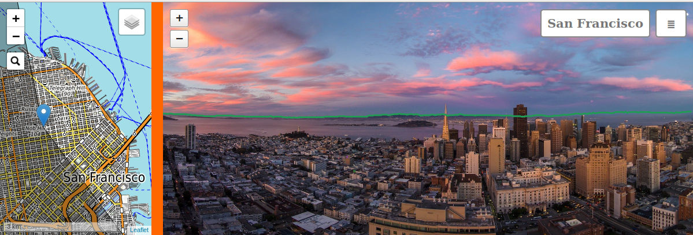
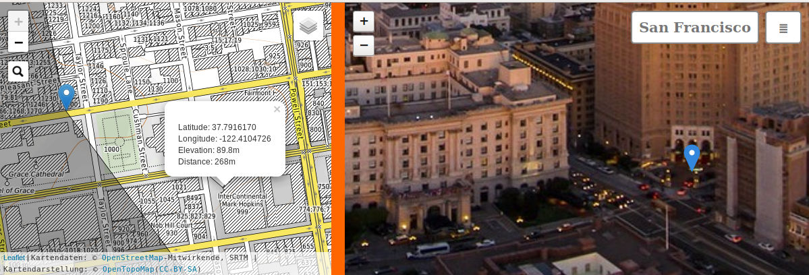

GeoImageViewer
Features
Below are three example images displayed by GeoImageViewer with screenshots.
The corresponding interactive views are available here
1. Grindelwald

Wideangle panoramic image (138° field of view) of the swiss town of Grindelwald.
The Pacman-like greyed feature in the left part of the mapview indicates the camera location, viewing
direction (east), and field of view.
The clicked feature in the photograph is the mountain
"Schreckhorn", and its elevation, distance from the camera (11.6km) and location are displayed using a popup in the map.
This
view is generated either by clicking the map at the respective location or the photograph, in both cases will
the program identify and mark the respective location in the other view.
It is not
precalculated and supplied as clickable hotspot, but calculated on-the-fly by the program.
That means that any feature like
buildings in the town, streets, or other landmarks, actually any position can be identified.

As an example, in the second screenshot we
zoomed into the view of the first image by a factor of 30 using the interactive controls (either by pushing
the +-button in the upper left, or by using the mousewheel, or pinch-zoom in touchscreen devices).
Clicking any arbitrary house in the photograph shows us its
location in the map, or vice versa. The size of this feature in the original photograph is only 5 pixels, hence the fuzzy zoomed image. The original photographs size is 4896x2752 pixels and it was taken with a Sony HDR-AS100V actioncamera during a bicycle trip to the mountain Männlichen. Knowing the calibration parameters
for this camera I was able to achieve an average error of approximately 3 Pixels for the alignment of the
camera with respect to the map, more about this procedure in the article Editing.
Also shown in the screenshots are two additional features:
The position of the horizon is marked green in both views, and can be turned on and off using a menu-option.
Apps like peakvisor, peaklens, peakfinder, etc offer similar functionality for images alone.
This can be used during alignment but is also quite informative in itself.
The maximum distance of the horizon
can also be set. This allows the user to identify staggered mountain ranges.
GPS parameters of tracks (3 in the example) are displayed as red lines. Portions of the track which are visible
in the photograph are marked in bright red in the map, hidden parts in dark red. This visibility is also
determined within the field of view of the camera, i.e. parts of the track hidden behind
mountains are dark red in the map (e.g. the invisible portions of the track to the lower left of the first image).
The tracks can be selectively switched on and off using the layers menu in the upper right part of the mapview.
Like the linked locations displayed by clicking, these two features are calculated in realtime.
Thus, once having a geoaligned view of a mountain, or some other location, we can easily view
any trail with known gps-parameters.
The relative sizes of map and imageview are different in the two screenshot examples.
This ratio can be arbitrarily set using the orange slider.
2. Oberbränd

Telephoto image of the swiss alps as viewed from Oberbränd (Black Forest/ Germany) on a very clear day.
This photograph just covers 4.6° field of view.
The horizon (green line) extends well beyond 130km. Camera is a Nikon P900, the focal length equals 400mm relative (35mm equivalent) or 76mm absolute. Again, features like houses in the close town
of Löffingen (8km), landmarks, or, as in the zoomed-in version below, mountains can be identified:
The "Muttenstock" (elev. 3089m) is 135km away.

3. San Francisco
The last image was a test about how far we can get with an unknown, uncalibrated camera. This drone-image
of San Francisco is downloaded from the
internet
and nothing, not even the location,
altitude or camera model was known. Using a couple of reasonable assumptions and by picking a
number of control points (corresponding points in the image and map), the program was able to come
up with a reasonable, while not perfect calibration. This is an iterative process, which takes some
time and effort, and which will be described in more detail
here.

The horizon fits quite well, at least the visible portions. Again, near and far features can be clicked and identified, the farthest away being Mt. Diablo in 45km distance. The zoomed-in version exhibits a closer target,
the entrance of the InterContinental Mark Hopkins, which is only 268m away from the drone. Also revealed by
the calibration process is the
drone position itself, which is close to 1200 Sacramento St. almost 100m above ground. The view of the
image covers 156°, and the mapping is cylindrical, probably converted from a fisheye lens.

Note: GeoImageViewer uses elevation data from
SRTM, which are not very useful for urban areas.
The height is some average of building tops and street level, usually closer to street level.
To identify tall buildings one therefor has to click somewhere in the lower part of the building,
or even onto ground level.
Usage
GeoImageViewer may be used passively as Image Viewer (Display Mode), or as editor to prepare
and align photographs for viewing (Edit Mode). In the following we describe Display Mode.
To run GeoImageViewer, open the file main.html with a webbrowser, either remotely
by clicking this link, or locally by using the browsers
File-menu (Note: Running via File->Open works on Firefox. Some other browsers might
require running via local webserver from localhost. See Editing for installation
procedures in these cases). Upon startup, GeoImageViewer loads and displays a set of images described
in a JSON-database (file images.json). This file can be opened and edited with any
plaintext editor like Notepad.
By default GeoImageViewer runs in passive Display Mode
like the demo version. It can be switched to
Edit Mode by appending ?edit to the URL, or by changing the file
main.html (see comments inside). Then additional features for
authoring are enabled, and at the same time more resources have to be
provided by the user. This mode does not work for the online version which
misses these resources. See the article Editing how Edit Mode works.
Display Mode
In this mode the user can select images in the ≣-menu or
by clicking markers in the mapview. Clicking the ≣-button itself opens a file dialog.
The following files can be opened:
- JSON-databases containing image data. When opened these data populate the menulist below this button.
- Images having their alignment parameters stored as EXIF-data within the image file. Images without
these parameters can only be opened in Edit Mode, and are rejected in Display Mode.
Hovering the label displaying the current images' name (image-menu) opens another
menu for image specific features.
The layers symbol in the mapview opens a menu (layers-menu) with options to show or hide GPS-tracks,
and image markers.
As mentioned before, clicking one point shows the corresponding location in the other view.
Of course, not all locations clickable on the map are visible in the image. The program treats
those invisible points as follows:
- Points clicked outside the field-of-view angle are ignored: No marker is displayed in the image.
Left-over markers from previous clicks can be removed by clicking them again, or by pressing the
letter 'z' on the keyboard.
- Points clicked inside the field-of-view, but hidden by some other feature are displayed with an
orange marker instead of the blue marker for visible features. The location where this orange
marker appears depends on the source for elevation data (see chapter Editing:
If SRTM-tiles are provided,
then the true direction of the invisible feature is displayed. For depthmaps, the orange marker points to the
top of the obstacle which hides the selected feature).
Requirements
The program runs on almost any device supporting webbrowsers.
It is written entirely in Javascript, HTML and CSS, and can be run
locally by downloading and installing all programfiles, or remotely from a server
like this setup. I have tested it
on Firefox and Chrome, on Windows, MacOS, Linux and Android.
Maps are displayed using the Leaflet-program. Any feature or any maps supported by
Leaflet may be used. See the file main.html and the Leaflet documentation
about map sources and how to set them up.
This documentation and the online-installation use OpenTopoMap.
The example also uses the Leaflet plugin
Groupedlayercontrol.
Display Mode requires the main HTML-file (main.html), the GeoImageViewer program (giv.js),
and the Leaflet program (Leaflet*-files). The module srtm.js in the js-directory
may be required depending on how 3d-data are supplied: If depthmaps are used like
in the demo, or color-coded SRTM-tiles are used, nothing else is required.
Otherwise, this module needs to be present, and is used to
access SRTM-tiles, see Editing.
Helmut Dersch der(at)hs-furtwangen.de